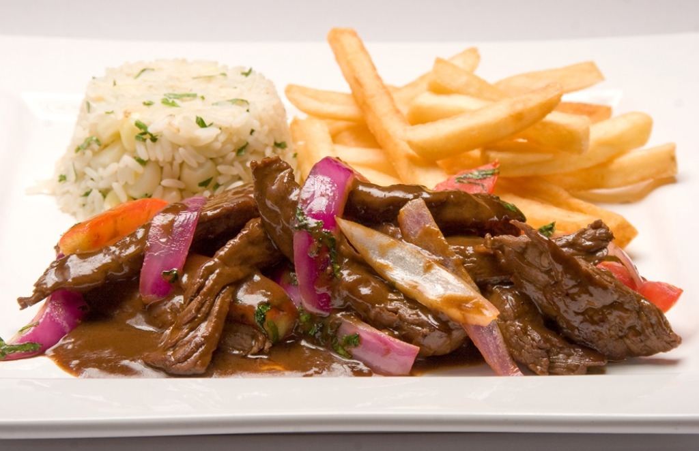

Gastronomía Peruana
Gastronomía Peruana
Ingredientes:
- 2 cebollas rojas cortada en tiras gruesas
- 4 tomates sin pelar cortados en tiras gruesas
- 1 ají amarillo cortado en tiras delgadas
- 4 tallos de cebolla china
- 4 dientes de ajo cortados finamente
- Lomo de res cortado en tiras gruesas
- Hojas de cilantro
- 8 cucharadas de vinagre tinto o blanco
Preparación:
- En reserva debes tener arroz recién graneado, preparado a tu gusto. También un recipiente con papas
fritas. Un consejo es que debes iniciar la preparación del lomo saltado para comer en el momento,
logrando mantener los sabores.
- En una sartén echamos aceite, subimos el fuego al máximo sin que se queme el aceite, agregamos la mitad
de la carne previamente cortada y sazonada.
- Hacemos movimientos de arriba a abajo para crear un sellado de la carne. Añadimos unas gotas de vinagre.
Puedes crear un flameado si caen a la llama, generando un efecto llamativo.
- Añade el resto de la carne hasta que llegue a un punto de cocción y retiramos del fuego.
- En la misma sartén colocamos la mitad de la cebolla y tomate. Luego de dos minutos incluir lo restante.
- Añadimos ajo, la parte blanca de la cebolla china y la carne con el jugo que ha soltado. Incluimos la
cebolla y tomate que separamos previamente.
- Incorporamos el ají amarillo y dejamos que todos los sabores se mezclen por unos minutos. Colocamos la
parte verde de la cebolla china y las hojas de cilantro. Chancamos un poquito algunos tomates para que
boten más jugo y equilibren la acidez. Probamos y corregimos la sazón.
- Para montar el plato. Colocamos un molde de arroz, al costado la porción de papas fritas junto al lomo
saltado. (Opcional) Puedes incluir un huevo frito montado para variar la presentación.
